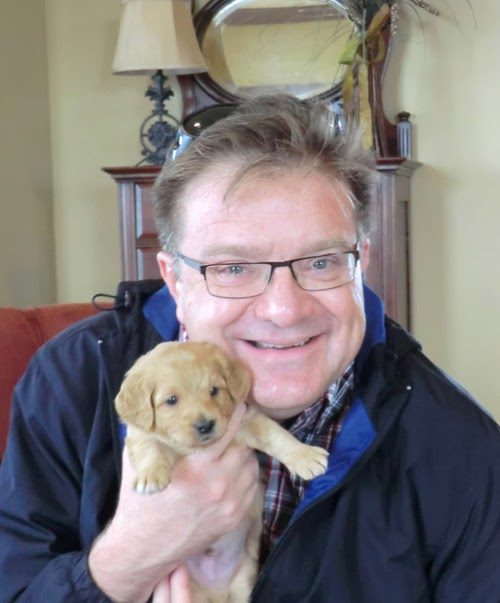
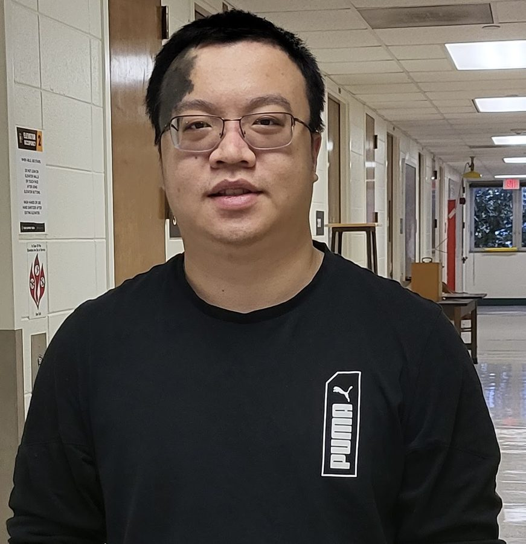
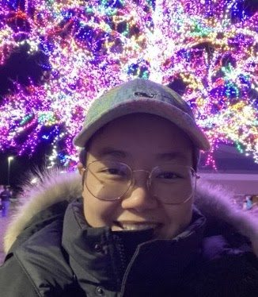
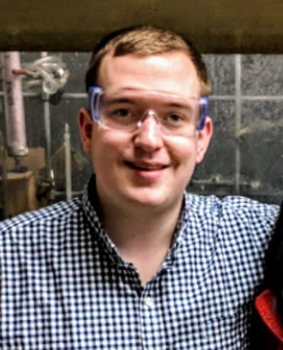
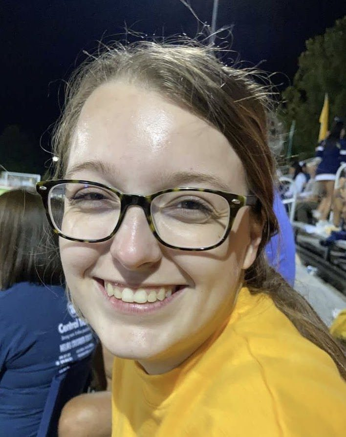
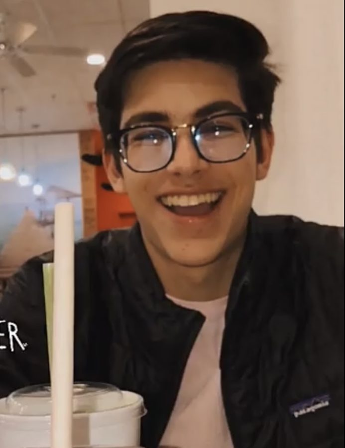

Principal Investigator

Professor Michael Harmata
Norman Rabjohn Distinguished Professor of Chemistry. AB, University of Illinois at Chicago (1980); PhD, University of Illinois at Urbana-Champaign (1985, Denmark); NIH postdoctoral fellow, Stanford University (Wender). At Missouri since 1986. harmatam@missouri.edu
Graduate Students

Jianzhuo (Kimi) Tu
Kimi obtained his BS (2016) in Applied Chemistry from Beijing University of Chemical Technology and his Master’s degree (2018) at Oregon State University. He joined the Harmata Research Group in 2018 as a PhD student. His research is the development of intermolecular (4+3)-cycloadditions and the exploration of intramolecular (4+3)-cycloadditions of oxidopyridinium ions, including work toward daphnicyclidin A (#220, #221) and the Organic Reactions chapter on (4+3) cycloadditions (#223).

Wanna Sungnoi
Wanna obtained her BA (2005) in English from Rajamangala University of Technology (Thailand) and then earned a BS (2018) in Biochemistry from Purdue University. She joined the Harmata research group in 2018 pursuing a PhD. She has developed the intermolecular (4+3)-cycloaddition reaction of oxidopyridinium ions with silylated dienes and indole dienes, and explored the oxidation chemistry and photochemistry of the cycloadducts (#218, #219, #222). She enjoys cooking, baking, and playing tennis.

Andy Romisch
Andy obtained his BS in Professional Chemistry from the University of Evansville in 2018 and joined the Harmata Research Group that year to pursue a PhD. His work seeks to expand the reactivity of allenic sulfones, more specifically electrocyclization reactions using these compounds.
Adam Hunt
Graduate student, Harmata Research Group.
Undergraduate Researchers

Veronica Worthen
Veronica is pursuing a Bachelor of Science in Chemistry at the University of Missouri. After showing a strong interest in organic chemistry, she joined the Harmata Research Group in the fall of 2020. Her research project focuses on developing (4+3)-cycloadditions of oxidopyridinium ions and sulfone-protected dienes.

Marco Lequio
Marco is pursuing a Bachelor of Science in Biochemistry at the University of Missouri. He joined the Harmata Research Group early in 2020 because of his interest in organic chemistry. He is studying mild methods of performing (4+3)-cycloadditions.
Former members are listed on the Alumni page.